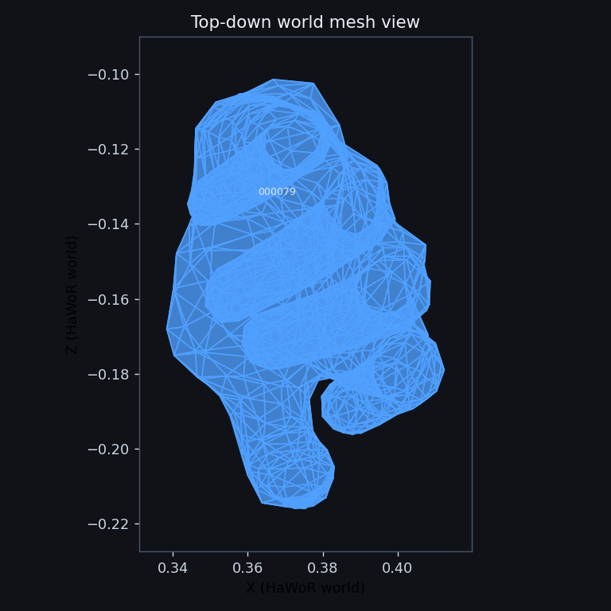
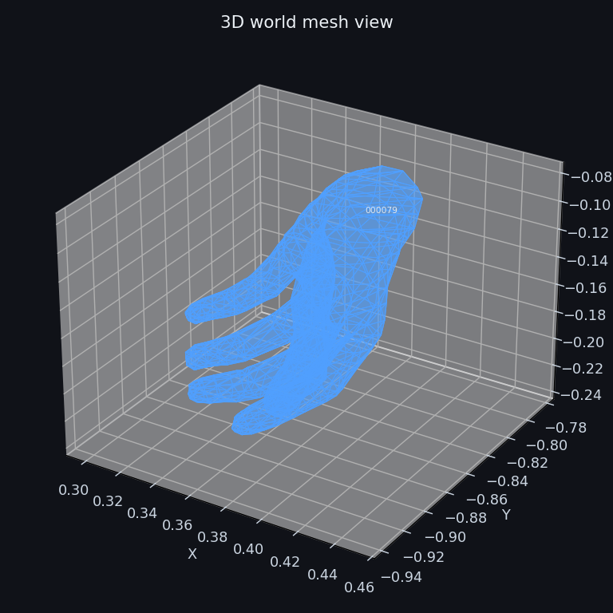
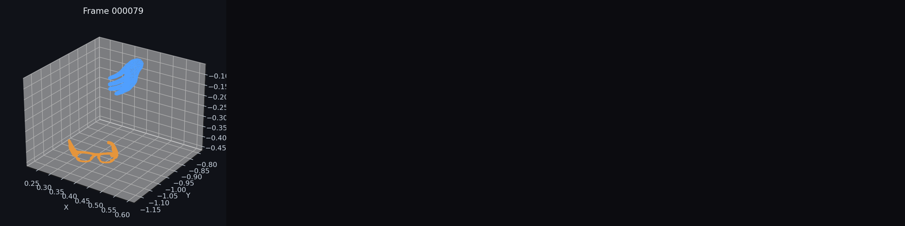
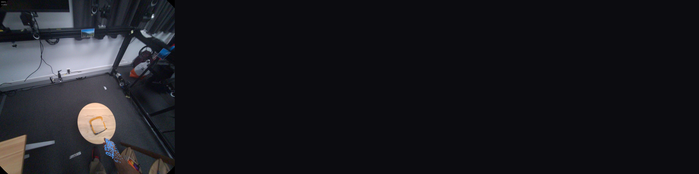

FoundationPose + HOT3D World-Hand Simple
Generated 2026-04-14 07:59:09 UTC. This page publishes the fused HOT3D simple lane from the repo-owned runner. World frame: hawor_world. Visualizations are interaction-biased (frames selected by smallest hand↔object distance) and object meshes are downsampled in time to reduce overlap.
Metrics
| hand_world_root_err_mm | 0.0000 |
|---|---|
| object_translation_cm | 241.8582 |
| fused_temporal_position_delta | 0.0104 |
Benchmark Metrics
| mpjpe_mm | 169.0738 |
|---|---|
| mpjpe_root_mm | 12.3285 |
| mpjpe_pa_mm | 4.7485 |
| mpjpe_2d_px | 166.8863 |
| auc | 0.0000 |
| detection_rate | 1.0000 |
| success_rate | 1.0000 |
| fscore_5mm | 0.0000 |
| fscore_15mm | 0.0007 |
| OBJ_rot_err_deg | 133.9505 |
| OBJ_trans_err | 0.6969 |
| OBJ_rot_orth_err | 0.4727 |
| OBJ_rot_det_err | 1.5273 |
| OBJ_detection_rate | 0.5273 |
Counts
| total_candidates | 1 |
|---|---|
| evaluated_sequences | 1 |
| skipped_sequences | 0 |
| total_frames | 55 |
| gt_frames | 55 |
| matched_frames | 55 |
| object_interpolated_frames | 26 |
Sequences
| Sequence | Object | Frames | object_translation_cm | Interpolated Frames |
|---|---|---|---|---|
| P0001_4bf4e21a | aria_small | 55 | 241.8582 | 26 |
Videos
Source clip requested 100 input frames. HaWoR produced 55 hand-valid frames; the videos show the 29 object-known frames from 000051 to 000079 at 5 fps. The HaWoR-world video uses one fixed 3D axis scale across all frames.
Video · fixed-scale HaWoR world hand/object · aria_small
Video · camera overlay hand/object · aria_small
Visualization Gallery

Topdown Trajectory · aria_small

World Mesh (Topdown) · aria_small

World Mesh (3D) · aria_small

World Hand Mesh (Topdown) · aria_small

World Hand Mesh (3D) · aria_small

World Frame Grid (Hand/Object) · aria_small

Camera Overlay Grid (Hand/Object) · aria_small

Camera Overlay Strip (Hand/Object) · aria_small
Skipped
0 skipped sequence records copied from the source run.